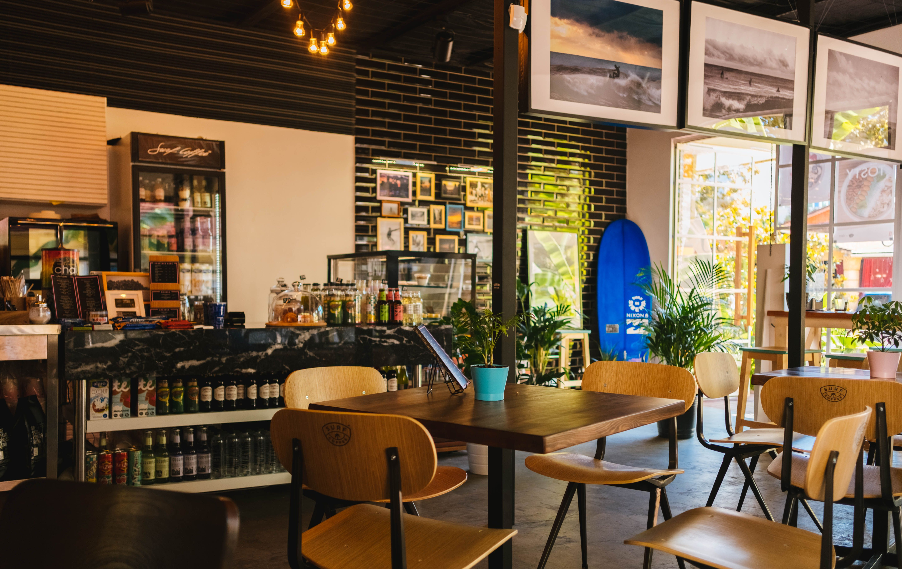

Kopi & Roti Café
Welcome to Kopi & Roti Café, your cozy spot near campus for fresh coffee and local delights! "Brewed with passion, served with warmth." We offer a relaxing environment where students and faculty can unwind or focus on their studies.
Our Menu / Services
- Kopi O Kau
- Traditional thick black coffee brewed daily. - RM 3.00
- Roti Bakar Kaya
- Crispy toasted bread with homemade kaya and butter. - RM 4.50
- Nasi Lemak Special
- Fragrant coconut rice with sambal, egg, and fried chicken. - RM 8.50
- Iced Green Tea
- Refreshing matcha green tea served cold. - RM 5.50
How to Order
- Browse our menu and pick your favorite items.
- Place your order at the service counter or scan the QR code at your table.
- Make your payment via cash, card, or e-wallet.
- Collect your food and enjoy your meal!
Facilities
- Free High-Speed Wi-Fi
- Power Sockets at Every Table
- Air-conditioned Study Area
What Our Customers Say
"The best coffee spot near campus! The atmosphere is quiet, perfect for working on assignments, and the Roti Bakar is amazing."

Contact Us
Address:
No. 12, Jalan Kampus UMT,
21030 Kuala Terengganu, Terengganu
Email: info@kopiroti.com
Find Us: View on Google Maps
© 2026 Kopi & Roti Café. All rights reserved.